Dr. Chandrashekar P Renowned Orthopaedic Surgeon | Sports Arthroscopy & Arthroplasty
A pioneer of robotic and computer-assisted knee replacement in India, co-creator of MISSO, India's first indigenous joint-replacement robot, and specialist in advanced joint reconstruction with over two decades of surgical excellence. Founder of the International Knee & Orthopaedic Centre (IKOC), Bengaluru.
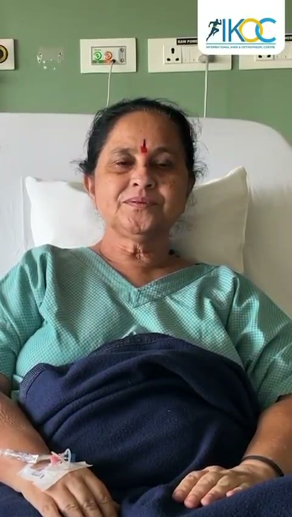
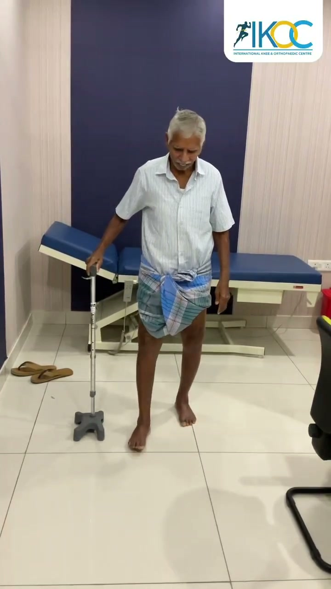
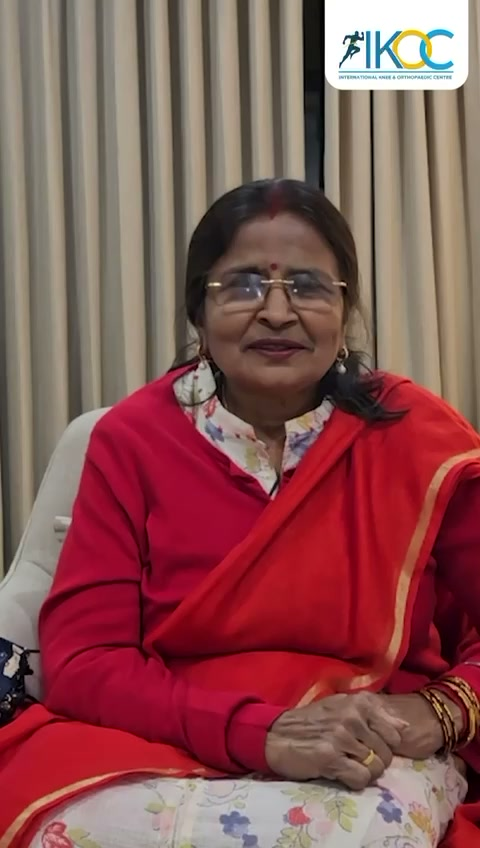
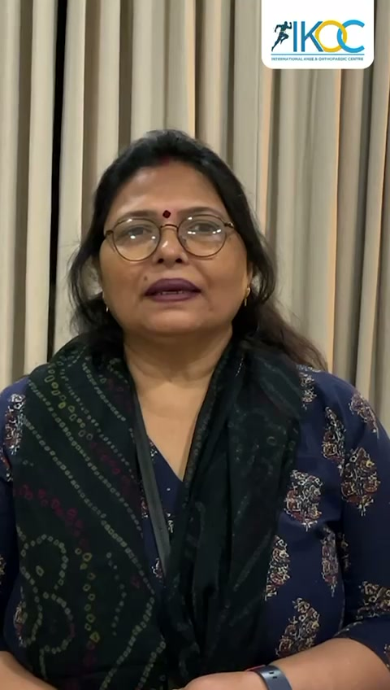
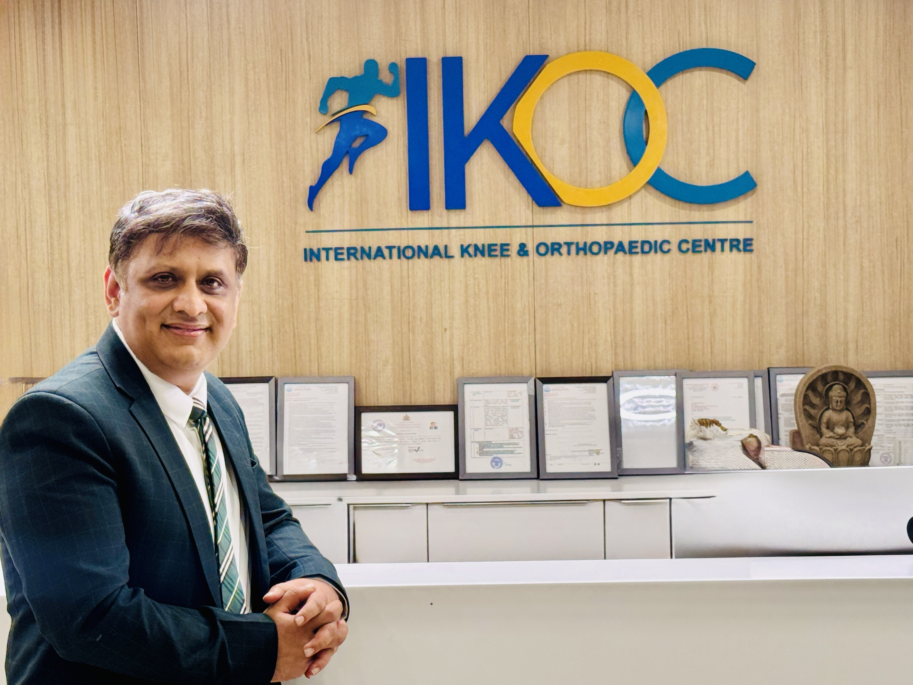
Experience that Speaks
Verifiable clinical track record
(Global Benchmark)
(India Pioneer)
(National Record)
*Figures reflect cumulative surgical experience to date.
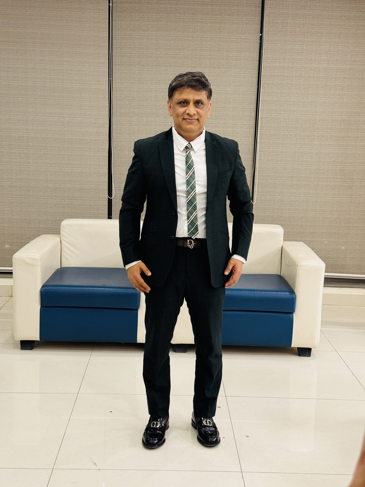
About Dr. Chandrashekar P
Renowned Orthopaedic Surgeon | Sports Arthroscopy & Arthroplasty
Dr. Chandrashekar P is a distinguished orthopaedic surgeon and India’s foremost pioneer in active robotic joint replacement. As Founder of the International Knee & Orthopaedic Centre (IKOC) and Head of Orthopaedics at Sakra World Hospital, Bengaluru, he has performed more than 50,000 orthopaedic surgeries and is recognized among the top knee specialists worldwide.
The first surgeon in India to introduce Active Robotic Joint Replacement using the CUVIS system, Dr. Chandrashekar served on its global design team and is a key co-designer of MISSO, India’s first indigenous surgical robot. His practice commands over 3,000 active robotic knee replacements, 12,000+ meniscal repairs (highest in the country), and record-setting volumes of over 2,500 joint replacements in a single year.
Key designer of MISSO (India’s 1st indigenous robot) & CUVIS design team; 3,000+ active robotic surgeries.
1st in South Asia for navigated ACL; 1st in India for NEO artificial ligament & highest Meniscus Transplants in India.
Discovered the novel Direct Lateral Portal arthroscopic approach; pioneered AI IntelliJoint navigation in India.
Trained 50+ fellows in arthroscopy & joint replacement; trains national & international surgeons in robotic knee techniques.
Areas of Clinical Expertise
Specialised orthopaedic care built on years of advanced surgical precision.
Robotic Knee Replacement
Total and partial knee replacement guided by active robotic and computer-navigation systems for precise implant alignment.
Joint Replacement
Knee, hip and shoulder replacement, including complex primary and revision surgery for failed replacements.
Sports Medicine & Arthroscopy
Keyhole surgery for ligament (ACL/PCL) reconstruction, cartilage repair and shoulder instability.
Meniscus Repair & Transplant
All-inside meniscal repair and meniscal transplantation to protect the natural joint.
Knee Resurfacing
Joint-preserving options for early and moderate arthritis, delaying or avoiding a full replacement for younger patients.
Cartilage & Ligament Restoration
Neo-ligament reconstruction and cartilage restoration techniques for knee stability and longevity.
Precision You Can Plan For
Traditional knee replacement relies heavily on the surgeon’s manual judgement in theatre. Robotic and computer-assisted surgery adds a layer of measurement and planning, the joint is mapped in detail, the surgical plan is rehearsed digitally, and implant positioning is guided in real time during the procedure.
What this can mean for patients:
- More accurate implant alignment and sizing
- Surgical plan tailored to unique anatomy
- Minimally invasive, tissue-sparing approach
- A focus on faster, comfortable recovery
*Suitability for robotic surgery is decided after a full clinical assessment. Individual outcomes vary.
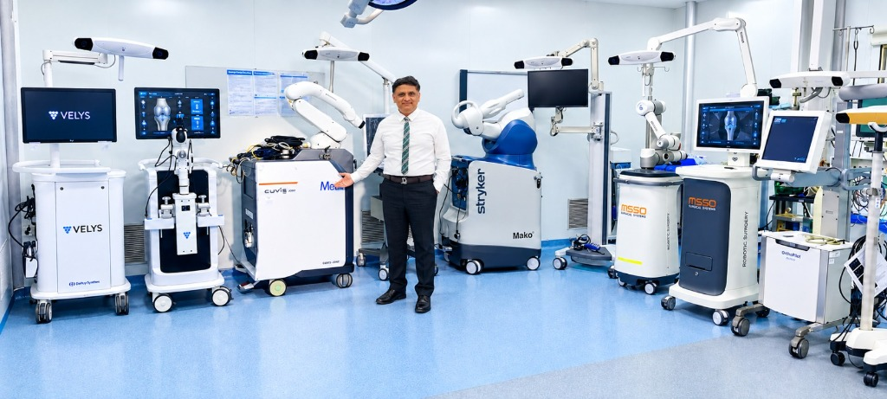
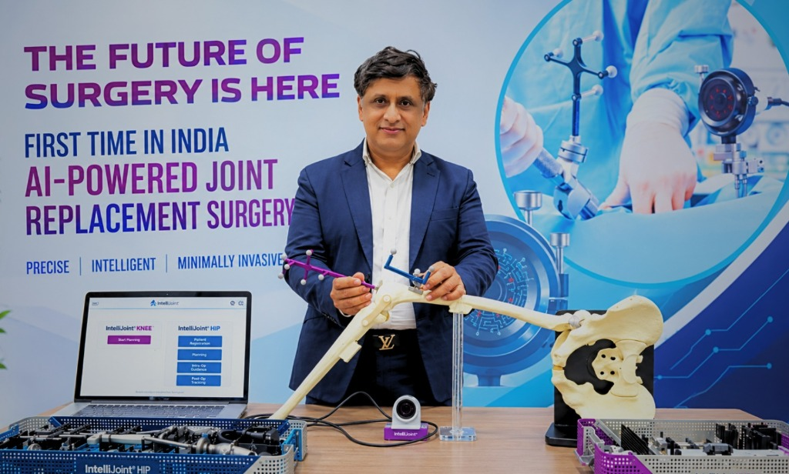
Pinless & Imageless System
Surgeon-Controlled AI Navigation
Registered to the patient through anatomical landmarks—including the hip center of rotation. Eliminates the need for an intramedullary (IM) rod, pre-operative CT radiation, and external pins outside the regular incision.
IntelliJoint KNEE Smart Navigation
Pioneered India’s 1st AI-Powered Total Knee Replacement & Optical Smart Navigation
Dr. Chandrashekar P’s Achievements in IntelliJoint
Dr. Chandrashekar P is among the first surgeons in India to introduce and use IntelliJoint technology, bringing advanced precision, optical guidance, and digital innovation to modern joint replacement surgery. He pioneered India’s first AI-powered Total Knee Replacement (TKR) using this imageless smart navigation platform, setting a new benchmark for data-driven orthopaedics and continuous surgical refinement in India.
The IntelliJoint KNEE system offers real-time intraoperative measurements during surgery, ensuring bone cuts are precise, with implants strategically placed to achieve optimal joint alignment. This fast and easy-to-use surgeon-controlled AI-based system is built for the convenience of orthopaedic surgeons, while enhancing patient recovery and providing predictable, long-term outcomes.
Using advanced optical guidance and surgical navigation directly within the sterile field, IntelliJoint helps restore natural joint mechanics, improve leg length accuracy, and ensure superior implant placement. This data-driven technology enables hospitals to continuously refine surgical outcomes through advanced intraoperative analytics—setting a new benchmark for precision orthopaedics in India.
Key Benefits of IntelliJoint:
Innovations & Milestones
A timeline of clinical contributions and pioneering achievements.
Co-creator of MISSO
Played a key role in designing MISSO, reported in the press as India’s first indigenous robotics system for joint replacement, aimed at making robotic surgery affordable and accessible.
India’s first AI-powered TKR
Performed India’s first AI-guided, imageless total knee replacement using an active real-time navigation system.
CUVIS Robot Launch & Highest Surgical Volume
Served as a global advisor for the CUVIS active-robotic platform. Led the launch of South India's first active robotic knee replacement system at Sakra and completed the highest number of active robotic surgeries in the region. Experienced across all major systems (ROSA, Mako, Velys).
Youngest Meniscus Repair in Karnataka
First surgeon to perform an arthroscopic meniscus repair on a 4-year-old child, marking the youngest recorded meniscus repair in Karnataka and the 4th youngest in the world.
World Leader in Meniscus & All-Inside Devices
Conducted the highest volume of meniscus repairs and specialized implants using advanced all-inside meniscal devices globally, prioritizing joint preservation.
Direct Lateral Portal
Credited with describing a new knee arthroscopy portal (the Direct Lateral Portal) to improve visualization and reach during keyhole procedures.
Stories of the Journey
Two decades of surgical excellence, South Asian landmark firsts, and pioneering robotic innovations led by Dr. Chandrashekar P.
Over 50,000 Surgeries & Global Replacement Volume
Widely recognized among the top knee surgeons in the world, Dr. Chandrashekar P has performed more than 50,000 orthopaedic procedures. His surgical volume records over 2,500 joint replacements in a single calendar year—one of the highest recorded for an individual surgeon worldwide—and has achieved 350+ joint replacements in a single month.
Currently performing approximately 4,500–5,000 procedures annually, including 2,500+ joint replacements, 300 ACL/PCL reconstructions, and 1,000 meniscal repairs.
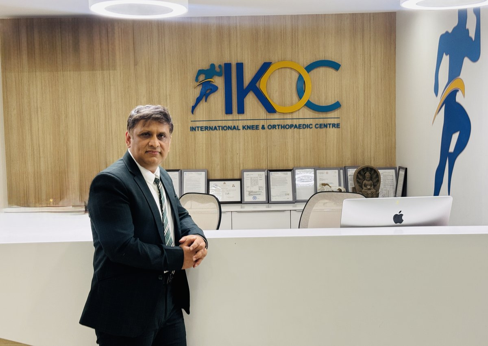
Research & Scholarly Publications
Peer-reviewed papers demonstrating clinical research and evidence-based practice (E-E-A-T).
Intra-operative Safety of an Autonomous Robotic System for Total Knee Replacement: A Review of Cases in India
Analysing surgical outcomes and safety metrics of active autonomous robotics platforms used in joint surgery.
Patient-Specific Intra-operative Guides (Custom Fit) in Knee Replacement
An analysis of anatomical templates and 3D custom fitting technologies during total knee arthroplasty.
Tumour-Induced Osteomalacia due to Phosphaturic Mesenchymal Tumour of the Sphenoid Bone
Case analysis regarding rare orthopaedic presentations of mesenchymal tumours and bone density metabolic changes.
Arthroscopic Excision of Calcific Deposits on the Lateral Collateral Ligament through a New Portal
Clinical report detailing a novel arthroscopic approach for lateral-side knee pathologies (Direct Lateral Portal).
Full list of publications and research abstracts available upon request.
Featured in the Press
Major national and medical news coverage regarding technology innovations and case success.
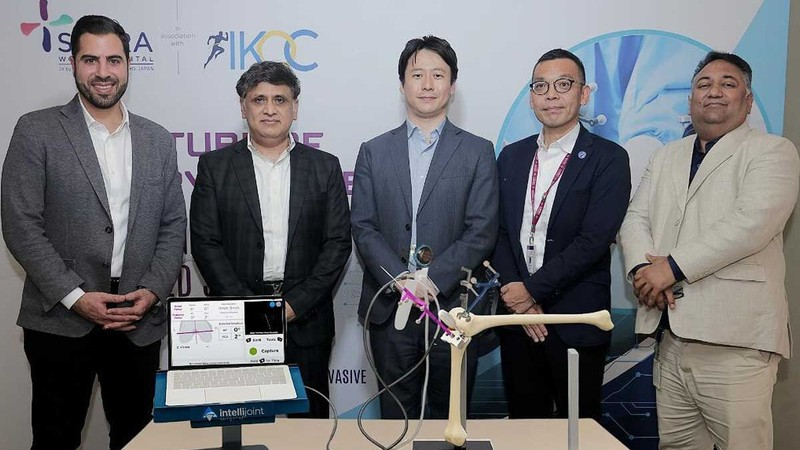
India's first AI-powered joint replacement surgery unveiled at Sakra IKOC
National press feature detailing Dr. Chandrashekar P and Sakra IKOC debuting real-time AI-guided joint replacement.
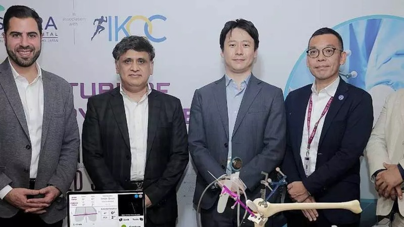
Sakra IKOC performs India's first AI-powered total knee replacement
Clinical coverage highlighting real-time surgical navigation and sensor tracking for millimeter-level accuracy.
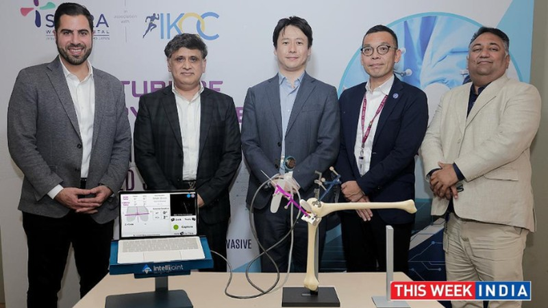
Sakra IKOC debuts India's first AI-powered total knee replacement
Comprehensive report on the technology launch, pinless navigation advantages, and accelerated recovery timelines.
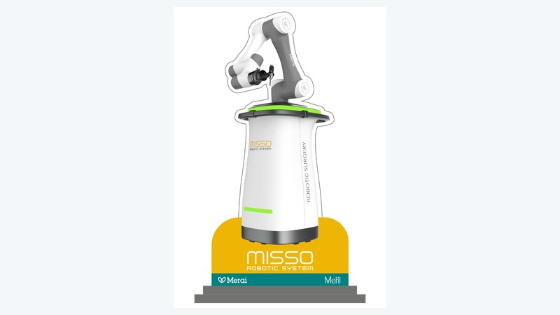
Meril introduces advanced surgical robotic technology MISSO in India
Highlighting Dr. Chandrashekar P’s co-creator role in designing India’s first indigenous knee-replacement robot.
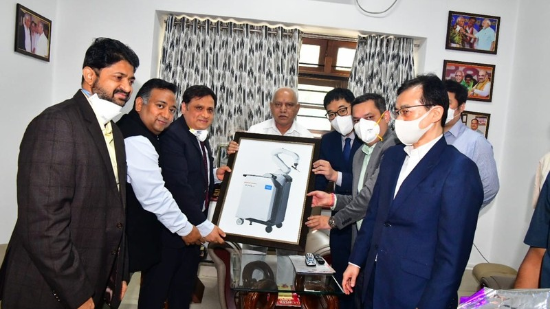
World's first fully active robotic knee replacement system (CUVIS) at Sakra
Inauguration by the Chief Minister of Karnataka, launching active robotic surgery led by Dr. Chandrashekar P.
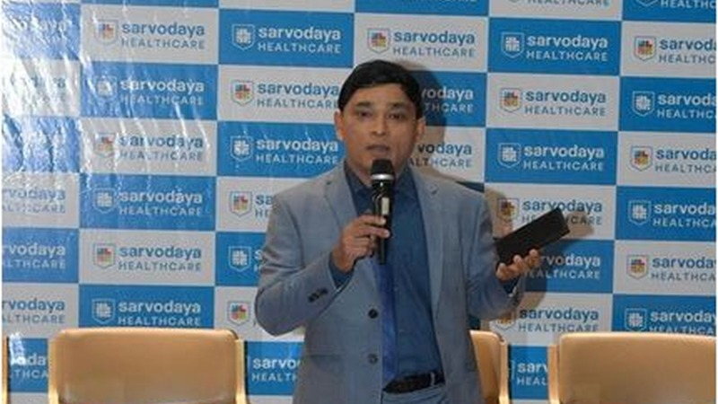
India's homegrown MISSO surgical robotics gains national adoption
National press feature reporting on surgical milestone adoption of the MISSO indigenous joint robot co-created by Dr. Chandrashekar P.
Videos & Patient Explainers
Explore conversations, technology launches, and visual explanations of orthopedic procedures.
Robotic Knee Replacement: Dr Chandrashekar P & Dr Akash Sharma
Surgeons from India and the UK explore the future of robotic knee surgery, sharing their mutual interest in cricket, surgical precision, and patient recovery.

How to Choose the Right Surgeon
Dr. Chandrashekar P discusses critical factors to consider when selecting an orthopaedic specialist.

Conversation with Dr. Marco Ezecheili
Technical dialogue detailing international advances in robotic systems and athlete recovery.

Precision Joint Replacement Overview
An explainer on active robotic assistance and advanced patient recovery protocols at IKOC.
In Their Words: Patient Stories
Real recovery milestones, restored mobility, and reflections shared by patients treated at IKOC & Sakra World Hospital.
Video Testimonials & Recovery Proof
Tap any video to watch genuine clinical recovery experiences
Post-Operative Recovery Experience
In-hospital feedback highlighting post-surgery comfort, bedside attention, and healing progress.
Restored Mobility & Walking Milestone
Demonstrating smooth post-operative walking in clinic, restoring movement confidence and independence.
Relief from Chronic Knee Pain
A heartwarming perspective on long-term knee pain resolution and restored quality of daily life.
Precision & Patient Reassurance
Expressing complete trust in clinical judgment, transparent explanation, and patient-first medical care.
Reflections on Surgical & Clinical Care
"The surgical plan was explained to me in detail using computer models. I was back on my feet walking with support within a day of my robotic knee replacement. The precision is visible in my recovery."
R. K. Sharma
Total Knee Replacement Patient · Bengaluru
"As a runner, finding out I had a complex meniscus tear was devastating. Dr. Chandrashekar's preservation-first approach and arthroscopic surgery saved my natural joint. Highly professional care."
P. Subramaniam
Meniscus Repair Patient · Bengaluru
"The robotic surgery gave me my active life back. The pain management post-operation was outstanding, and the physical rehabilitation support at Sakra and IKOC was systematic and compassionate."
S. Fernandez
Robotic Knee Surgery Patient · Bengaluru
Compliance Disclaimer: These are individual experiences shared with consent. Results and recovery timelines vary from person to person and are not guaranteed. Please consult a qualified doctor for medical advice specific to your condition.
Conditions Treated
Procedures Offered
Frequently Asked Questions
Understanding treatments, robotics, and what to expect during recovery.
Consultation Locations in Bangalore
IKOC, International Knee & Orthopaedic Centre
L-166, 3rd Floor, 5th Main Service Road, Sector 6, Outer Ring Road, HSR Layout, Bengaluru (next to Focus Diagnostics)
Book an Appointment
Select your preferred platform or contact the clinical desks directly.